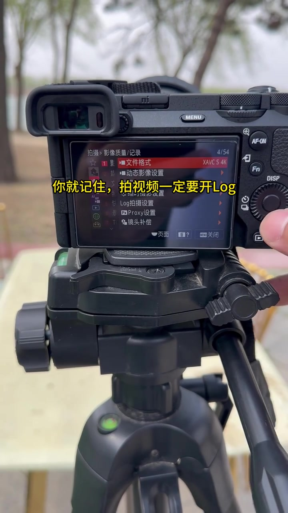
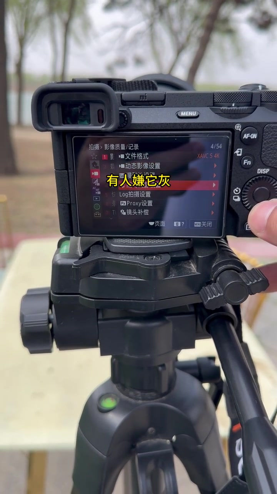
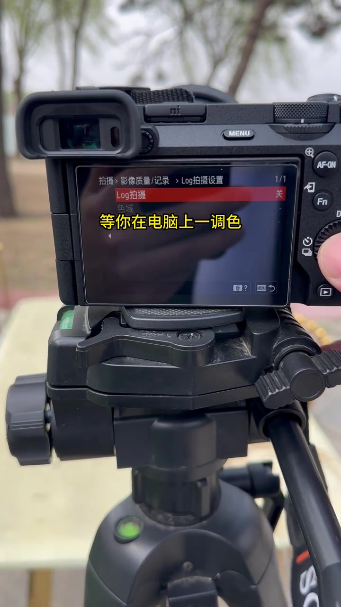
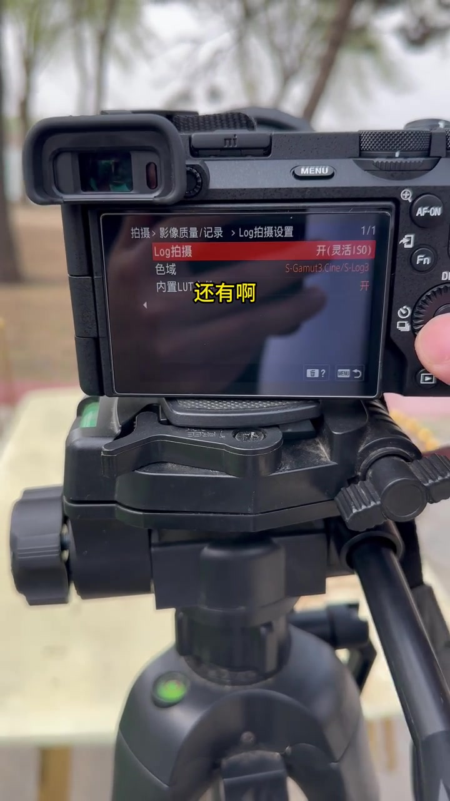
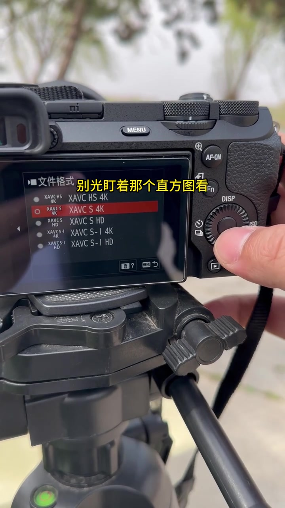
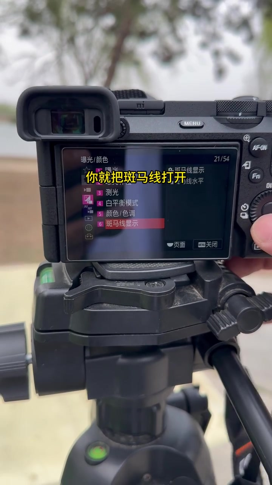
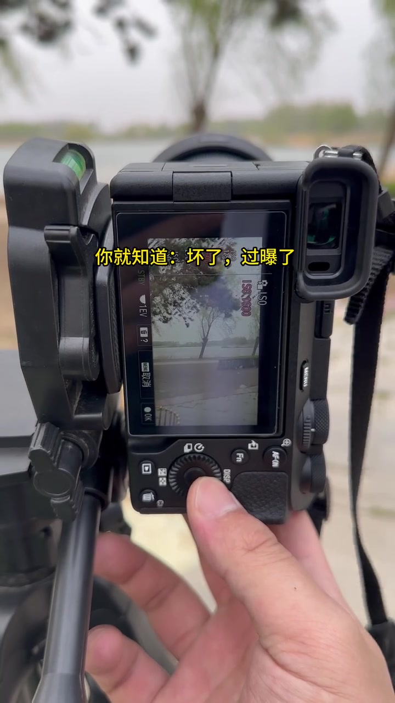
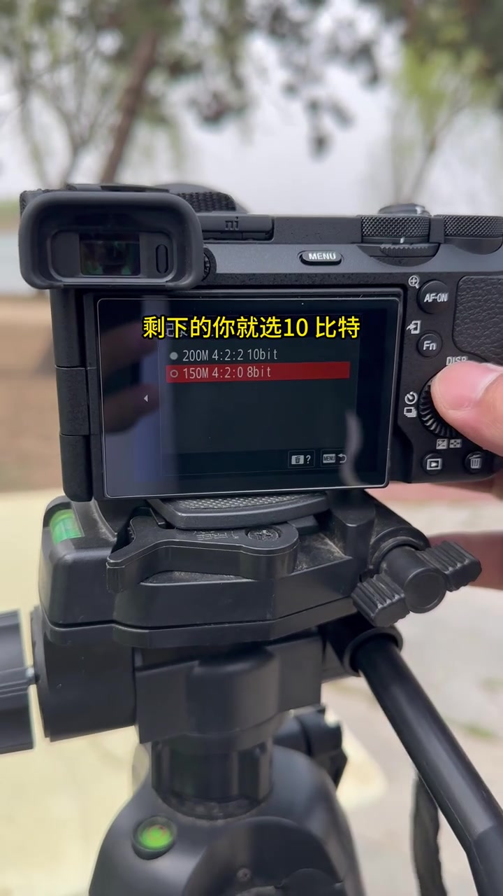

开场就钉死：拍视频一定要开 Log
UP 主「孙虎摄影器材」把索尼微单架在三脚架上，后屏停在「拍摄 → 影像质量/记录」页。文件格式显示为 XAVC S 4K，菜单里还能看见「Log拍摄设置」。黄字叠字幕直接给出口诀：拍视频一定要开 Log。
画面字幕：「你就记住，拍视频一定要开Log」

[00:01] 开场命题：拍视频先开 Log；菜单停在影像质量/记录页，文件格式为 XAVC S 4K。
Opening brief: turn on Log before shooting; the menu sits on image-quality/recording with format XAVC S 4K.
有人嫌它灰？其实是还没到时候
镜头仍停在同一菜单区，UP 主解释常见抱怨：Log 预览发灰。字幕纠正——那是还没到时候；等电脑上一调色，质感才出来。随后进入「Log拍摄设置」：先看到 Log 拍摄为「关」，再切到「开(灵活ISO)」，色域显示 S-Gamut3.Cine/S-Log3，内置 LUT 打开。
画面字幕：「有人嫌它灰」「其实那是还没到时候」「等你在电脑上一调色」「那个质感就出来了」
说明：Whisper 把「嫌它灰 / 还没到时候 / 一调色」听成「嫌他挥 / 环没到时候 / 一条色」。下文以可见字幕与菜单为准；末尾转录区仍保留原始分段。

[00:02] 先承认观感：有人嫌 Log 发灰——常见误判入口。
First acknowledge the look: some find Log gray — a common misjudgment entry point.

[00:05] 进入 Log 拍摄设置子页：先看到关闭状态，旁白强调调色后质感才出来。
Entering the Log shooting-settings subpage: first seeing it off, with the narration stressing the texture only emerges after grading.

[00:07] Log 打开：灵活 ISO + S-Gamut3.Cine/S-Log3，内置 LUT 为开。
Log on: flexible ISO + S-Gamut3.Cine/S-Log3 with built-in LUT enabled.
别只盯直方图：斑马线定在 100
UP 主提醒：别光盯直方图，有时不太准。画面切到文件格式列表（含 XAVC HS 4K 等），随后进入「曝光/颜色 → 斑马线显示」。口诀是把斑马线打开、水平定在 100；只要画面一闪条纹，就知道坏了——过曝了。实拍预览里天空与水面明显发白，ISO 1600 叠在侧栏。
画面字幕：「别光盯着那个直方图」「有时候不太准」「你就把斑马线打开」「定在100」「只要画面一闪条纹」「你就知道：坏了，过曝了」
Whisper 将「直方图 / 条纹 / 过曝了」误识为「指纷图 / 条文 / 不爆了」。

[00:08] 转场提醒：别只盯直方图；文件格式列表同时可见。
Transition reminder: don't only watch the histogram; the format list is also visible.

[00:10] 斑马线入口：曝光/颜色页高亮「斑马线显示」，口诀定在 100。
Zebra entrance: the exposure/color page highlights “zebra display,” mantra set at 100.

[00:14] 判读演示：预览发白、条纹预警——字幕写「坏了，过曝了」。
Reading demo: a washed-out preview and striping alert — the subtitle says “oh no, overexposed.”
剩下的选 10 bit，就这么简单
收尾回到记录码率页：列表里可见「200M 4:2:2 10bit」与「150M 4:2:0 8bit」。UP 主说剩下的你就选 10 比特，整条口诀收束——开 Log、靠斑马线控曝光、记 10 bit。
画面字幕：「剩下的你就选10比特」「就这么简单」

[00:16] 收尾设置：在 10bit 与 8bit 之间明确指向选 10 比特。
Ending settings: between 10-bit and 8-bit, explicitly pointing to 10-bit.